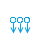

| Session id: | |
Touchpad mode(Relative mouse movement)
Tap to activate soft keyboard. IE doesn't support 3 finger gestures and 2 finger scroll (mouse wheel).
 | Long press | Right click |
| Flick | Scroll screen if remote desktop resolution is bigger, otherwise, drag | |
| Pan | Drag | |
| 2 finger tap | Right click | |
 | 2 finger scoll | Mouse wheel |
| 3 finger tap | Show software keyboard (iOS only) | |
| 3 finger pinch open | Maximize window | |
| 3 finger pinch close | Restore window | |
| 3 finger flick left | Previous window | |
 | 3 finger flick right | Next window |
|  | 3 finger flick down | Minimize all windows |
| 3 finger flick up | Restore all windows |